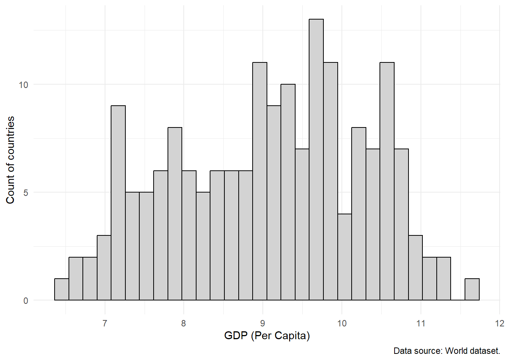

9 👀 Descriptive statistics and summarizing your data
In the previous exercise, we successfully loaded our data 💪 and we were able to get a sense of how many observations and variables we had for our data. You may have noticed, however, that we were only previewing our data. We still do not have a super solid sense of what our data look like. 👀
There are two main ways that we can describe and get a handle on our data:
- get a measure of our central tendency
- get a measure of our spread
9.1 The central tendency
The central tendency of a variable (univariate) would describe where most of your observations lie on possible values that a observation can take on for that particular variable.
There are a number of ways to quantify this. The most common are the mean (\(\bar{x}\)) and the median.
9.2 The spread
It is not necessarily the case that observations all sit at the mean (they may, but do not have to). Think for example about house prices. If the average house price is $405,000, that does not imply that every single house price is $405,000. Some will be higher than that or lower than that.
This motivates our need to describe a variable by not just its central tendency but also the variance or spread around the mean. There are two common metrics we can calculate to do this:
- The variance (\(\sigma^2\))
- The standard deviation (\(\sigma\))
The difference between the two is that the standard deviation is
\[ \sigma (\text{std. dev.}) = \sqrt{\sigma^2 (\text{variance})} \]
9.3 Easy ways to describe these with R
9.3.1 Graphics
In R, there are tons of graphical ways that we can describe a single variable.
A really handy website that you can use for inspiration and for example code, is R-Graph-Gallery.
The most popular R package for making nice-looking graphics in R is called ggplot2() (Wickham 2016).
For your first time using it, you should install the ggplot2() (Wickham 2016) package.
# Install the ggplot2 package
install.packages("ggplot2")Then once we’ve installed it, we want to make sure to load by using the library() function in our .R script before we use it.
library(ggplot2)9.3.1.1 Histograms
Histograms are really useful charts that we can use to visually depict the distribution of observations for a particular variable in our dataset.
Say, for example we want to visualize the breakdown of countries’ GDPPC. We can do that with a histogram.
world %>% # grab the world dataset, and do the following
ggplot() + # make a ggplot object
geom_histogram( # make a histogram
aes(x = log(gdppc)), # use the gdppc variable
fill = "#D3D3D3", # fill the bars with light grey
color = "#000000" # make the outlines of the bars black
) +
theme_minimal() + # change the theme to be prettier
labs( # clean up the labels
x = "log(GDP per capita)", # change the x-axis label to this
y = "Count of countries", # change the y-axis label to this
captions = "Data source: World dataset." # add a caption
)What the code is doing above:
- Grab the world data set and use the
pipefunction from themagrittrpackage (Bache and Wickham 2022) to connect the other functions to it. - Create a
ggplot()(Wickham 2016) object. - I want to make a histogram, so I’m going to use
ggplot(Wickham 2016) and will use thegeom_histogram()function. - Inside the
geom_histogram()function, I want to tell it what variable I want to plot. So I am going to use theaes()function which will grab from theworlddataset object and will then grab thegddpcvariable. I am going to use thelog()function to log-transform it. This will make the x-axis a bit easier to read. - For the histogram, I want to change the default colors of the graph a bit. I want to
fillin the bars with a light grey color (using a hex code)"#D3D3D3"and I want to make the outline of the bars black (using a hex code)"#000000". - Then, I want to make the rest of the plot look a little bit prettier - so I am going to use the
theme_minimal()function from theggplot2package. - Also to help make the plot a bit prettier, I am going to change some labels for the figure with the
labs()function from theggplot2package. To change my x-axis label, I am going to setxequal to"GDP (Per Capita)". To change my y-axis label, I am going to setyequal to"Count of countries". And I want to add a caption at the bottom for my reader to know what dataset this is from, so I am going to setcaptionequal to"Data source: World dataset.".
`stat_bin()` using `bins = 30`. Pick better value with `binwidth`.Warning: Removed 6 rows containing non-finite values (`stat_bin()`).
9.3.1.2 Boxplot
Another common way to visually describe a variable in your data is through a boxplot. Boxplots lets us visualize not only the median (one metric of our central tendency) of a variable (the line down the middle), but also the spread through the edges of the box (which represent the first and third quantiles), and the minimum and maximum values. Any extra “dots” that the plot shows reflects “outliers” – which are observations that are quite abnormal relative to the sample.
world %>% # grab the world dataset
ggplot() + # make a ggplot object
geom_boxplot( # make a geom_boxplot
aes(x = log(gdppc)), # using the gdppc variable
fill = "#D3D3D3", # fill it with a light grey color
alpha = 0.7 # don't make the color solid
) +
theme_minimal() + # use the minimal theme to look nicer
labs( # adjust the labels
x = "log(GDP per capita)", # change the x axis to this
caption = "Data source: World dataset."
)To make the boxplot for the GDP (per capita) gdppc variable in the world dataset, I can run the code above.
- I first grab the
worlddataframe object - Using the
pipefunction (%>%), I connect the world dataframe object to the code below. - I first create a
ggplotobject with theggplot()function. - I then specify that with that
ggplotobject, I want to make a boxplot by using thegeom_boxplot()function from theggplot2package. I specify a couple of options. I first specify that I want to use thegdppcvariable for the plot. I also indicate that I want the fill color for the plot to be light grey (hex code"#D3D3D3"). I then don’t want the color to be solid light grey and want to add some transparency too it, so I specify thealphaoption to make it a bit more transparent. - I then use the
theme_minimalfunction fromggplot2to make the plot look a bit nicer. - Finally, I wanted to adjust the labels and so I use the
labs()function from theggplot2function. Since I want to adjust the label for the x-axis, I specify thexoption and set it equal toGDP (per capita). I also want to add a caption to indicate where I got these data from and so I use thecaptionoption and set it equal to the text that I want for the caption.
Warning: Removed 6 rows containing non-finite values (`stat_boxplot()`).
9.3.2 Tables
Tables are a numeric, rather than visual, way to help us understand characteristics of particular variables in our dataset.
Unlike what we have with Figure 9.1, we may want concrete numerical descriptions of our data. There are a few ways we can do this.
We can calculate the mean of our variable by using the mean() function:
mean(world$gdppc, na.rm = TRUE) # from the world dataset, grab ($) the column called gdppc[1] 16326.78Note that for the mean and sd functions, I have to include an additional option (na.rm = TRUE) to ignore missing values: countries that didn’t report their GDP (per capita) in the dataset.
We can also calculate the standard deviation of our variable by using the sd() function:
sd(world$gdppc, na.rm = TRUE) # from the world dataset, grab ($) the column called gdppc[1] 18456.59Additionally, if we want to see both the mean and the median, we can use the summary() function:
summary(world$gdppc) # from the world dataset, grab ($) the column called gdppc Min. 1st Qu. Median Mean 3rd Qu. Max. NA's
683.8 3249.1 9863.2 16326.8 21183.4 123593.0 6 Notice how it doesn’t give us a calculation for our standard deviation? UGHH.
Another drawback to these is that the output doesn’t look all that nice and it would also require us to copy and paste things. Which opens up the chance that we accidentally copy the result for our standard deviation and refer to it as our mean in our report or we may accidentally pick the wrong number.
One super nifty function that we can use is the datasummary_skim() function from the modelsummary package (Arel-Bundock 2022). What the modelsummary package does, is it can calculate these things, along with quite a few others as well.
So, I am going to tell R to grab my world dataset object, and to apply the following functions to it – I do this with the pipe function (%>%):
- With
dplyr’s (Wickham et al. 2023)mutate()function, I am going to transform thegdppccolumn to be thelog()of it. This log transformation makes it a bit easier to read the numbers. I am going to store the result of this into a new column calledlog_gdppc. - With
dplyr’s (Wickham et al. 2023)select()function, I am going toselect()thelog_gdppccolumn. - With
dplyr’s (Wickham et al. 2023)rename()function, I am going torename()thelog_gdppccolumn tolog(GDP per capita)
Note how instead of using quotations in the rename() function, I am using the forward apostrophe symbol? I am doing this because I am technically renaming the column. So if I am using the rename() function, I should use that instead of quotations.
- Then, with
modelsummary’s (Arel-Bundock 2022)datasummary_skim()function, I am going to make a table for the selected variables.- I want to put a note on the bottom of the table telling my readers where I got the data for that variable from, so I am going to add a
notethat says"Data source: world dataset.". - I want to have the output be easy to pull over to a
.docxfile, so I am going to save a.htmlfile calledgdppc_summary.htmlin my working directory (should be thepsci_2075folder on myDesktop). I can then find the file on my computer, and open with my web browser of choice by double clicking on thegdppc_summary.htmlfile (e.g., Firefox, Google Chrome, Safari, etc.), and then I can copy and paste the table that it opens into my report document.
- I want to put a note on the bottom of the table telling my readers where I got the data for that variable from, so I am going to add a
world %>% # grab the world dataset
mutate( # change the values for a variable
log_gdppc = log(gdppc) # take the log of gdppc and store it in new column called log_gdppc
) %>%
select( # grab a variable...
log_gdppc #... specifically the log_gdppc column, drop all the other columns
) %>%
rename( # rename columns
`log(GDP per capita)` = log_gdppc # specifically rename log_gdppc to log(GDP per capita)
) %>%
datasummary_skim( # make a table sumamrizing the variables
notes = "Data source: world dataset.", # add notes to bottom of table
output = "gdppc_summary.html" # store result to a html file called gdppc_summary.html
)| Unique (#) | Missing (%) | Mean | SD | Min | Median | Max | ||
|---|---|---|---|---|---|---|---|---|
| log(GDP per capita) | 177 | 3 | 9.1 | 1.2 | 6.5 | 9.2 | 11.7 | |
| Data source: world dataset. |
It gives me a whole bunch of things. Including a (albeit small) histogram in the last column. Nice!
9.4 Some final notes
- If you want to know how to make a graph in R, I highly recommend R Graph Gallery. They have tons of examples (with code) and using either
base-rplots (the uglier, but easier to create, ones) orggplot2(the prettier, but more verbose, ones). - An example
.Rfile from Dr. Philips’ lecture can be found on canvas. - To see an example
.Rfile for all of this (all together and in one place), can be found on this page. (You can either download the file or copy and paste its contents into your own.Rfile.) - A lot of people love to jump at the chance to add all these colors to graphs and such. I am much more skeptical of this. While I love loud colors, they can be a problem in data visualization. You should not rely exclusively on color in your data visualizations as there is significant variation in people’s ability to detect and distinguish particular colors. Therefore, though it is boring, I often recommend grey scale to make it easier for everyone to see your graphs!
- Also, you should be very careful about what types of figures you use to describe your data. You are providing a visual narrative about your data. Just as a comic book author should be conscious and careful about their choices for their illustrations, so too should an analyst be with their data visualizations.